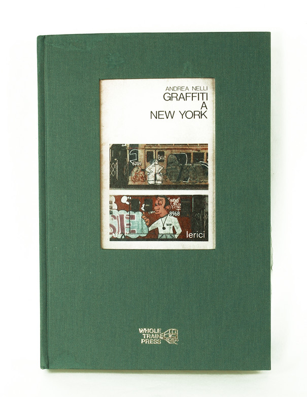
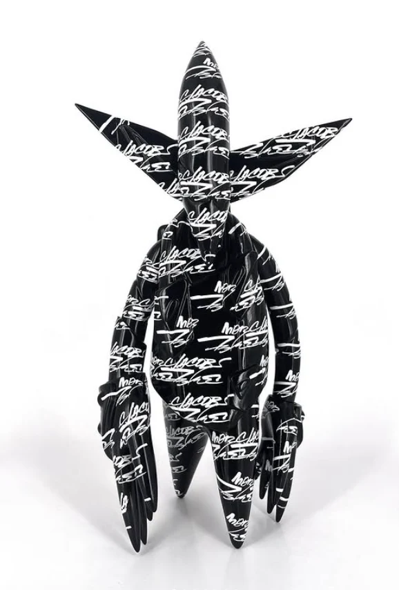
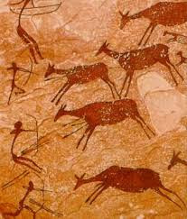

Il Graffitismo
Gioco di squadra
Introduzione
Cos'è il graffitismo?
Il graffitismo (in inglese graffiti writing) è una manifestazione sociale e culturale di pittura murale diffusa in tutto il mondo, basata sull'espressione della propria creatività tramite interventi pittorici sul tessuto urbano, frequentemente considerati atti vandalici e puniti secondo le leggi vigenti. Talvolta è correlato a essa l'atto dello scrivere il proprio nome d'arte (tag) e il numero della strada in cui si viveva, come se fosse un logo. Il fenomeno, ricordando la pittura dei murali, è da alcuni ad essa accostato, poiché numerosi graffitisti (in inglese writer) dipingono mezzi pubblici o edifici di interesse storico e artistico.
Nel corso degli anni molti artisti hanno comunque maturato nuove tendenze creative per cui, pur mantenendo radici nel graffitismo, sono riusciti a sconfinare nella tipografia, nel design, nell'abbigliamento, contaminando il tipico stile degli anni '80 con ideali più razionali e vicini alla grafica. Si parla di tendenze artistiche "post-graffiti" in particolare riferendosi all'arte di strada, e di graffiti design per le influenze oramai evidenti nelle tecniche pubblicitarie e nella moda. È possibile affermare che molti artisti oramai integrati nel sistema convenzionale del mercato dell'arte, traggono il loro valore da esperienze precedenti spesso formalmente illegali.
Origini
Quando nasce?
Sebbene le sue origini si possono far risalire all'abitudine dei soldati alleati nel corso degli anni quaranta di disegnare lo scarabocchio Kilroy was here, il graffitismo nasce a Filadelfia nei tardi anni sessanta sui treni e si sviluppa in seguito a New York negli anni settanta fino a raggiungere una prima maturità stilistica a metà degli anni ottanta.
Nel 1972-75 appaiono i primi "pezzi", rappresentanti inizialmente una semplice evoluzione delle firme, divenute più grandi, più spesse e con i primi esempi di riempimento e di contorno (outline). Ben presto, anche se un pezzo aveva bisogno di molto spray (due o più bombolette) che avrebbero permesso di fare molte tag, tutti i writer raccolsero la sfida lanciata da SuperKool223 e cominciarono a fare pezzi. Iniziarono le prime repressioni e le campagne contro il graffitismo. Le carrozze della metro vengono pulite e lavate, si mettono taglie sui writers, si recintano i depositi della metro (luoghi preferiti per l'azione) e si piazzano pattuglie cinofile lungo le recinzioni. Nonostante ciò tra i graffitisti c'era una continua sfida, che portò all'evoluzione e al miglioramento qualitativo del fenomeno, che prese ad ampliarsi. Alcuni writer inventarono nuovi stili (come loop o nuvole) o perfezionarono quelli già esistenti, aggiungendo sfondi, grazie di provenienza tipografia, personaggi di cartoni animati (puppets) e forme prese dalla segnaletica stradale o dalla logotipia. I pezzi si ingrandirono top-to-bottom wholecar, diventando più elaborati e colorati Wild Style.
Nei primi anni ottanta, anche grazie alla realizzazione di Style Wars (documentario sui graffiti della metropolitana newyorchese) e del film Wild Style, il fenomeno del graffitismo si diffuse su scala mondiale, trovando in Europa un fertile terreno.
From Streets to Galleries
Il destino delle linee
L'Aerosol-art è stata una delle prime espressioni artistiche accostate al graffitismo. Si tratta dell'utilizzo della bomboletta spray con applicazioni pittoriche aerografiche simili alle produzioni aerografiche convenzionali. Essa ha dapprima arricchito di significato le scritte Graffiti connotandole e rendendole appetibili al grande pubblico, e successivamente, ha trovato una propria indipendenza e dignità artistica. Molti Aerosol-Artist sono anche graffitisti ma sempre più emergono figure che fanno di questa tecnica sia un punto di partenza che di arrivo. L'Aerosol-Art si configura quindi come una tecnica pittorica aerografica spesso associata alle produzioni di graffitismo.
La tendenza graffiti-logo si delinea quando alcuni graffitisti cominciano ad associare il proprio nome a un'icona che viene riprodotta serialmente sulle superfici di contesti urbani. L'efficacia comunicativa di queste produzioni sulla popolazione estranea al fenomeno è indubbiamente maggiore rispetto ai loghi presenti nei normali graffiti. Questo fenomeno espressivo è stato protagonista delle prime esperienze di "arte di strada" internazionali connotando molti artisti di successo. La prima artista di strada in Italia ad usare nuove tecniche espressive quali la riproduzione del logo e le pitture monumentali per mezzo di spray e tempere è stata Pea Brain a Bologna all'inizio degli anni novanta, precedendo la "nouvelle vague" di arte di strada che sta nascendo da qualche anno a questa parte. L'incontro con Pea Brain segnerà anche il percorso creativo di un altro artista bolognese: Dado, graffitista che diventa famoso negli anni '90 per lo stile del suo lettering.
Le espressioni di origine inglese Stencil Graffiti e Stencil Art si riferiscono a un tipo di graffiti ottenuti per mezzo di uno stencil (maschera normografica) attraverso cui viene spruzzata vernice spray. In alcuni casi una immagine è realizzata usando più stencil e diversi colori. Ogni stencil permette di creare una forma di un unico colore, quindi per creare immagini a più colori è necessario creare una maschera appositamente realizzata per ogni colore che si vuole utilizzare, applicandole in fasi successive sulla stessa superficie. Rispetto ad altre forme di graffiti writing e di street art, lo stencil consente una esecuzione più veloce e permette di riprodurre una stessa identica immagine in un qualsiasi numero di copie. Questi elementi ne fanno una tecnica di tagging e tag bombing particolarmente efficace.
Crew
Equipaggio
Una crew, che in inglese comune significa equipaggio, è il termine usato nello slang per indicare un gruppo, spesso composto da amici, legati dal writing ma non solo ed esclusivamente da questo. Sinonimi sono il francesismo "clique", lo slang bolognese "balotta", gli inglesi "connection" e "squad" (mutuato dal linguaggio militare). Nella crew è sicuramente importante la stima e il rispetto reciproco tra i suoi componenti, non mancano comunque raggruppamenti fatti ad hoc, come i "TFP" ("The Fantastic Partners") di Cope2: nei quali potevano entrare solamente i migliori studenti dell'ambiente newyorkese, che dimostrassero di essere "King", re incontrastati, in materia di writing.
Il nome di una crew viene scelto in base agli interessi del gruppo di amici, generalmente accordandosi sulla connotazione che si vuole dare alla propria, futura, immagine. Molte volte il nome di una crew è un acronimo, che può anche avere più di un significato, come ad esempio UA (United Artists) della quale è un rappresentante significativo Darco.
Dai graffiti alla Street Art
Evoluzione culturale e artistica
Negli anni ‘70 e ‘80, i graffiti erano spesso visti come atti vandalici, legati ai quartieri periferici, alla ribellione giovanile e a contesti urbani degradati. Tuttavia, nel tempo, alcuni artisti hanno iniziato a trasformare le semplici "tag" in opere più complesse, che richiedevano tecnica, creatività e un messaggio chiaro. Questa trasformazione ha segnato la nascita della street art.
Alcuni writer come Dondi, Lady Pink e Futura 2000 iniziano a creare lettere elaborate, personaggi e paesaggi, trasformando i graffiti in una forma d’arte visiva vera e propria; Keith Haring comincia a disegnare figure stilizzate nei corridoi della metropolitana di New York: le sue opere sono semplici, ma piene di significato sociale e politico; e Jean-Michel Basquiat, con il suo alias "SAMO", unisce graffiti, poesia e pittura astratta, aprendo il dialogo tra arte di strada e arte contemporanea.
Da qui in poi, molti street artist iniziano a essere invitati a esporre in gallerie e musei, cambiando completamente la percezione del loro lavoro. La street art rompe le regole del sistema artistico tradizionale: non serve permesso, non c’è un biglietto da pagare e chiunque può interagire con l’opera.
Il graffitismo oggi
Un linguaggio visivo universale
Oggi la street art è riconosciuta a livello internazionale come una forma d’arte autonoma, sofisticata e spesso impegnata socialmente. Gli artisti usano tecniche diverse (murales, stencil, poster, collage, sculture urbane) e affrontano temi come: diritti umani, ambiente, politica, disuguaglianze, urbanizzazione e alienazione.
Città come Berlino, Londra, Lisbona, Buenos Aires, Roma e Napoli sono ormai riconosciute a livello internazionale come veri e propri musei a cielo aperto, grazie alla ricchezza e alla varietà delle opere di street art che ospitano. In questi centri urbani, i muri delle strade, i sottopassaggi, le facciate dei palazzi e perfino le serrande dei negozi diventano superfici espressive, trasformando il paesaggio cittadino in una galleria d’arte accessibile a tutti, gratuita e in continua evoluzione. Accanto a ciò, si sono sviluppati veri e propri festival internazionali di street art, come Upfest a Bristol, uno dei più grandi eventi d’arte urbana in Europa, dove centinaia di artisti da tutto il mondo si riuniscono per dipingere dal vivo, o Wall & Street a Milano, che punta a valorizzare l’arte urbana italiana e internazionale attraverso mostre, performance e incontri. In parallelo, sono sorte anche gallerie specializzate in arte urbana, che ospitano le opere di artisti di strada portandole all’interno di spazi espositivi, creando un ponte tra la dimensione pubblica e quella istituzionale dell’arte. Questa commistione ha contribuito a legittimare la street art come una delle espressioni più vive e significative del panorama artistico contemporaneo.